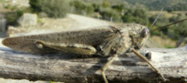
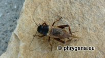
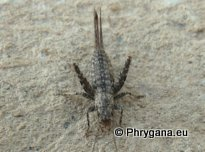
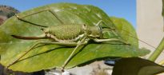
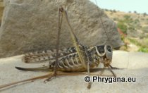

")
| PHRYGANA | Fauna | Flora | Galles | liste des espèces |
contact -
info - commentaires phrygana1 (at) gmail.com |
| Particularités crétoises | nouveautés | Mines | ressources naturelles |
| Orthoptera (les Orthoptères) de Crète |
|
| CAELIFERA | |||
| ACRIDIDAE | PYRGOMORPHIDAE | ||
| Crète: au moins 20 (sous)espèces | Crète: 1 espèce | ||
|  | |||
| Anacridium aegyptium | Pyrgomorpha conica | ||
| ENSIFERA -- GRYLLOIDEA -- GRYLLIDAE | |||
| Crète: au moins 8 (sous)espèces | |||
|
|
 |
|
|
| Eumodicogryllus bordigalensis | Gryllus bimaculatus | Oecanthus pellucens | |
| ENSIFERA -- GRYLLOIDEA | |||
| MOGOPLISTIDAE | |||
| Crète: 1 espèce | |||
|  | |||
| Arachnocephalus vestitus | |||
| ENSIFERA -- TETTIGONIOIDEA | |||
| BRADYPORIDAE | PHANEROPTERIDAE | ||
| Crète: 1 espèce | Crète: 6 (sous)espèces | ||
|  |
 |
||
| Uromenus (Steropleurus) elegans | Acrometopa cretensis | Tylopsis lilifolia | |
| ENSIFERA -- TETTIGONIOIDEA | |||
| TETTIGONIIDAE | |||
| Crète: 20 (sous)espèces | |||
|  | |||
| Decticus albifrons | Tettigonia viridissima | ||
| 05 juillet 2013 |
| © paul fontaine -- © Phrygana.eu 2007 -- 2013 |